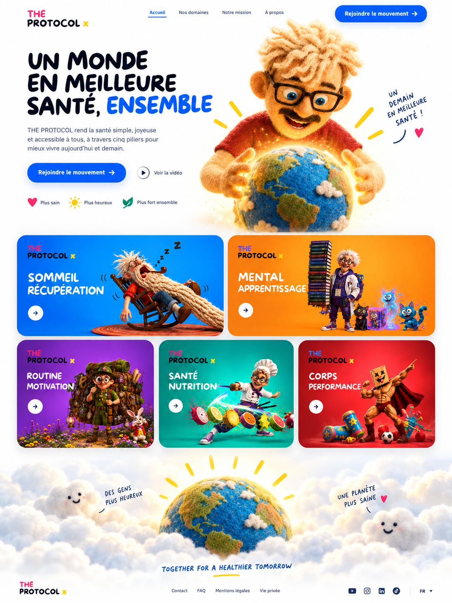

Retour aux domaines
Domaine 04
Nutrition & santé.
Mieux manger sans rigidité : énergie stable, digestion plus légère, décisions plus simples au quotidien.

Le protocole nutrition
Pas un régime. Un système de choix plus faciles.
On simplifie les repas, l'hydratation et les signaux du corps pour éviter les décisions compliquées quand l'énergie est basse.